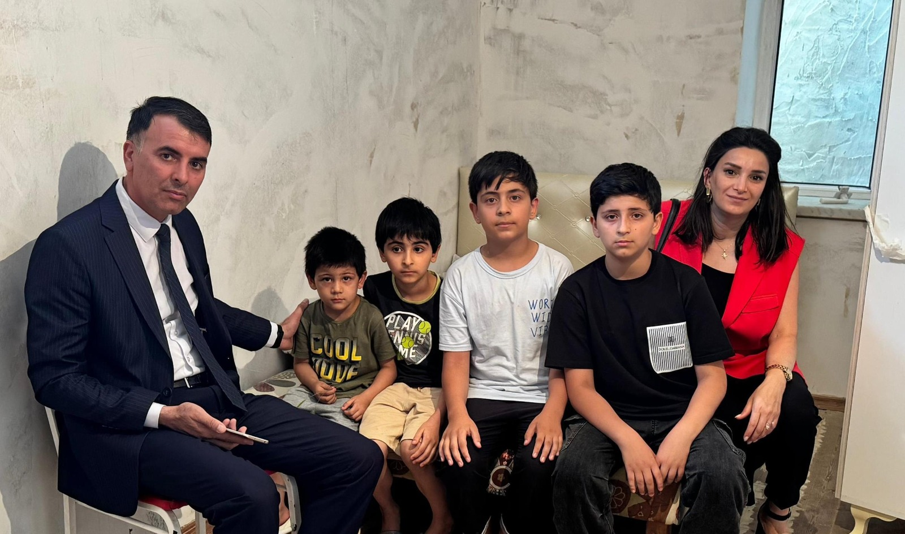
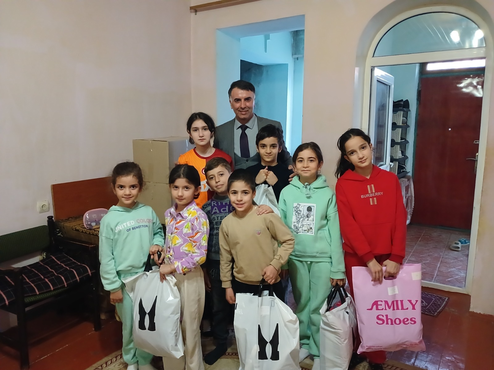
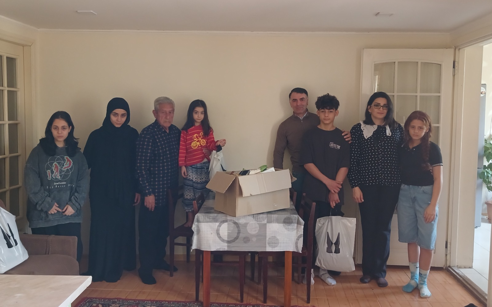
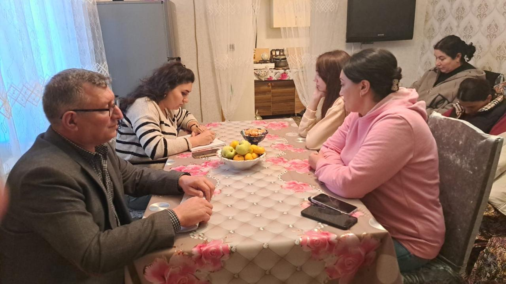
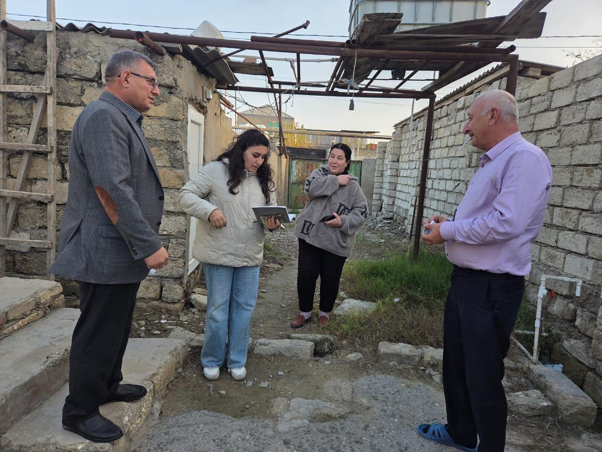
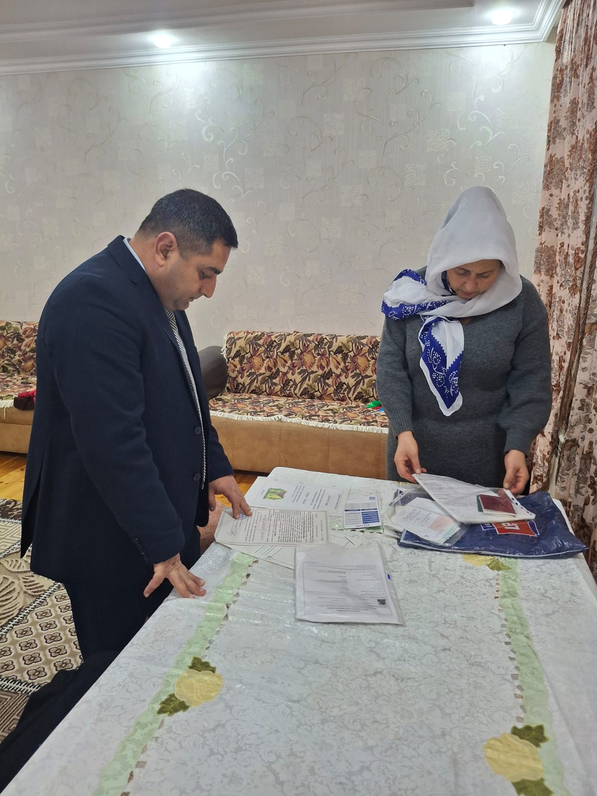

<div class="slide" id="slide-9">
        <div class="glass-card main-content full-width flex-layout overflow-hidden">

                <!-- Background Ambience -->
                <div
                        class="absolute top-0 right-0 w-[800px] h-[800px] bg-orange-500/10 rounded-full blur-[120px] -z-10 animate-pulse">
                </div>
                <div class="absolute bottom-0 left-0 w-[600px] h-[600px] bg-blue-500/10 rounded-full blur-[100px] -z-10 animate-pulse"
                        style="animation-delay: 2s;"></div>

                <!-- Content Container -->
                <div class="grid grid-cols-1 lg:grid-cols-12 gap-8 h-full relative z-10">

                        <!-- Left Column: Text Content (4 cols) -->
                        <div class="lg:col-span-4 flex flex-col justify-center space-y-6 animate-text">

                                <!-- Header Badge -->
                                <div
                                        class="inline-flex items-center gap-2 px-4 py-1.5 rounded-full bg-orange-50 border border-orange-100 text-orange-600 w-fit">
                                        <i class="ph-duotone ph-users-three text-lg"></i>
                                        <span class="text-xs font-black tracking-[0.2em] uppercase">Fərdi Yanaşma</span>
                                </div>

                                <h2 class="text-3xl md:text-4xl font-black text-gray-900 leading-tight">
                                        Ailə Səfərləri <br>və
                                        <span
                                                class="text-transparent bg-clip-text bg-gradient-to-r from-orange-600 to-red-500">Monitorinq</span>
                                </h2>

                                <div class="relative">
                                        <div
                                                class="absolute -left-4 top-0 bottom-0 w-1 bg-gradient-to-b from-orange-500 to-red-400 rounded-full opacity-50">
                                        </div>
                                        <p class="text-lg text-gray-600 leading-relaxed font-medium pl-4">
                                                Ailələrin sosial-məişət vəziyyətinin yerində öyrənilməsi, uşaqların
                                                psixoloji durumu və inkişafının qiymətləndirilməsi. DİN, Təhsil və
                                                Səhiyyə orqanları ilə birgə risklərin aradan qaldırılması.
                                        </p>
                                </div>

                                <!-- Stats/Highlight -->
                                <div class="flex items-center gap-4 pt-4">
                                        <div class="flex -space-x-3">
                                                <div
                                                        class="w-12 h-12 rounded-full bg-orange-100 border-2 border-white flex items-center justify-center text-orange-600 font-black text-lg">
                                                        320
                                                </div>
                                        </div>
                                        <div class="text-sm text-gray-500 font-medium">
                                                2025-ci ilin 10 ayı ərzində<br><span
                                                        class="text-gray-900 font-bold">Ailəyə Səfər</span>
                                        </div>
                                </div>

                        </div>

                        <!-- Right Column: 8 Image Grid (8 cols) -->
                        <div class="lg:col-span-8 grid grid-cols-2 md:grid-cols-4 gap-4 animate-scale"
                                style="animation-delay: 200ms;">
                                <!-- Image 1 -->
                                <div
                                        class="aspect-[4/5] rounded-2xl bg-gray-200 overflow-hidden relative group shadow-md hover:shadow-xl transition-all duration-300">
                                        
                                </div>
                                <!-- Image 2 -->
                                <div
                                        class="aspect-[4/5] rounded-2xl bg-gray-200 overflow-hidden relative group shadow-md hover:shadow-xl transition-all duration-300 mt-8">
                                        
                                </div>
                                <!-- Image 3 -->
                                <div
                                        class="aspect-[4/5] rounded-2xl bg-gray-200 overflow-hidden relative group shadow-md hover:shadow-xl transition-all duration-300">
                                        
                                </div>
                                <!-- Image 4 -->
                                <div
                                        class="aspect-[4/5] rounded-2xl bg-gray-200 overflow-hidden relative group shadow-md hover:shadow-xl transition-all duration-300 mt-8">
                                        
                                </div>
                                <!-- Image 5 -->
                                <div
                                        class="aspect-[4/5] rounded-2xl bg-gray-200 overflow-hidden relative group shadow-md hover:shadow-xl transition-all duration-300">
                                        
                                </div>
                                <!-- Image 6 -->
                                <div
                                        class="aspect-[4/5] rounded-2xl bg-gray-200 overflow-hidden relative group shadow-md hover:shadow-xl transition-all duration-300 mt-8">
                                        
                                </div>
                                <!-- Image 7 -->
                                <div
                                        class="aspect-[4/5] rounded-2xl bg-gray-200 overflow-hidden relative group shadow-md hover:shadow-xl transition-all duration-300">
                                        
                                </div>
                                <!-- Image 8 -->
                                <div
                                        class="aspect-[4/5] rounded-2xl bg-gray-200 overflow-hidden relative group shadow-md hover:shadow-xl transition-all duration-300 mt-8">
                                        
                                </div>
                        </div>

                </div>
        </div>
</div>
